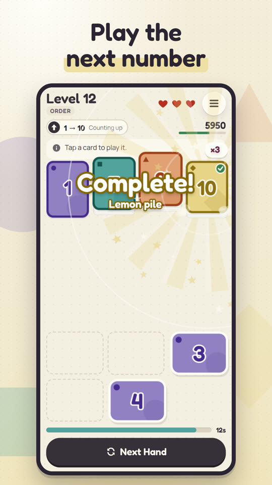
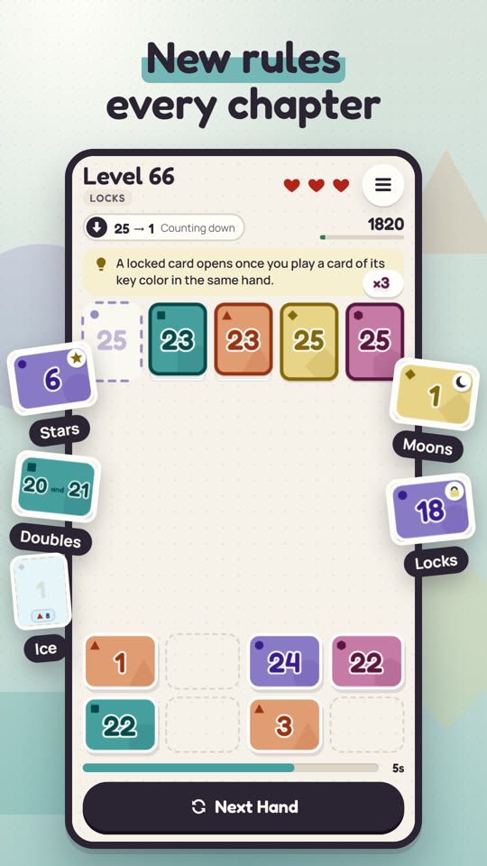
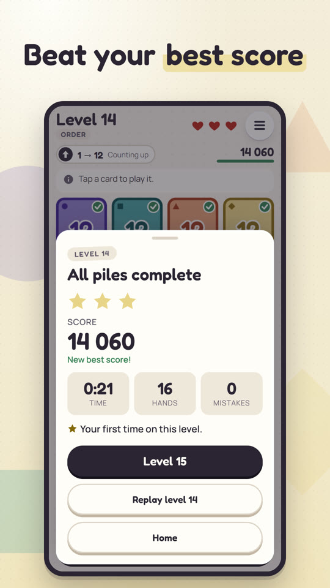

Tricky Piles is live on Google Play. It's a calm card puzzle: play the next number onto the right pile before the move clock runs out, and new rules arrive chapter by chapter. It's free, with one optional purchase, and it's in five languages. It's the first game I've taken all the way from a prototype to a store page.



Who did what
I'll be direct about this, because it's the part people ask about. AI coding agents, mostly Claude Code, wrote the code. I designed the game, wrote the specs, reviewed what the agents produced, tested every build on my own phone, and made the calls. Every call that mattered is written down as a short decision record in the repository: the context, the decision, and what it costs us.
There are eight of them. Here they are, in plain words.
The eight decisions
The HTML prototype had been played and tuned, and it came with 3,279 automated checks. Rewriting the engine from the spec would have produced different levels and thrown that tuning away. So the engine was ported module by module, same algorithms, same random-number order, checked against recorded "golden" levels.
Menus are plain web pages; the board is drawn with PixiJS for smooth effects on a mid-range phone. The prototype's second visual theme was dropped: one look halves the art work and the testing.
Retries replay the same deal, everyone gets the same daily, and rankings compare identical levels. That only works if the game logic has no hidden randomness, so the rule is enforced automatically. After launch, the level generator is frozen: new content goes into new levels.
The spec said UTC. The prototype's players were used to their own midnight, so the daily changes at local midnight.
Without playtest data yet, the hand-built learning ramp was locked. After that, the endless "remix" gets harder by becoming denser with special rules every 20 levels, not longer or faster.
No ads between levels and no consent wall before play. After a loss you can watch one optional ad to continue once; a single purchase removes the ads. Continues are free until level 15.
The levels never end, and a long map made the game feel like a finite list. Now one big "Level N" button, a daily card and a streak are all you see.
English, Portuguese, Dutch, Korean and Simplified Chinese. A test fails the build if any language is missing a line of text.
How I kept control
The build happened in numbered slices, each with its own plan, so every change had a clear scope and a clear way to check it. Before locking content I set up a playtest script for people who had never seen the game: what to say, what not to explain, and which levels to watch for hesitation.
Takeaways
Directing AI agents doesn't remove the work; it moves it. Less typing, more deciding, more reviewing and a lot more testing on a real phone. The decision records are what made that manageable, and they're the part of this project I'm proudest of.
← Back to the blog